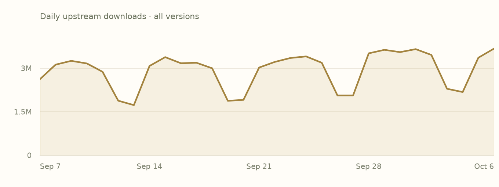
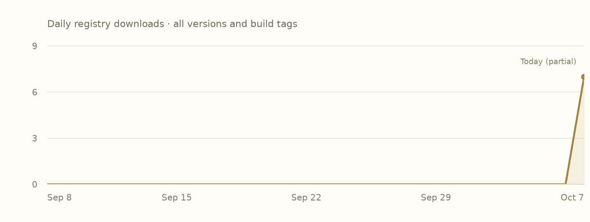

Overview
crates-io/anyhowThis library provides anyhow::Error, a trait object based error type
for easy idiomatic error handling in Rust applications.
This is the adopted Rust edition. Use the author’s README below for API documentation and examples.
Read the upstream READMEFeatures
Declared activationDefault state includes transitively enabled local features. Follow a feature name to its declaration.
Swipe horizontally to see all columns.
| Feature | Default | Enables |
|---|---|---|
backtrace | No | No additional feature or dependency edges declared. |
default | Yesdefault | |
std | Yesdefault → std | No additional feature or dependency edges declared. |
Plain names enable local features. dependency/feature forwards a dependency feature; dependency?/feature forwards only if that dependency is already enabled. Empty edges do not imply no effect in source.
Dependencies
Manifest requirementsVersion requirements and activation conditions, as recorded. These are declarations, not a resolved project graph.
Swipe horizontally to see all columns.
| Package | Requirement | Kind | Activation |
|---|---|---|---|
| No dependencies declared. | |||
Dependents
Preview coverageDeclared relationships within these six package pages. Conditional edges may depend on features or targets.
No matching dependency declarations in this six-package preview.
Indexed builds
Bound assetsEach row groups compiled units with the same target, toolchain, profile and feature selection. Missing builds do not mean upstream incompatibility.
Swipe horizontally to see all columns.
| Target | Toolchain | Profile | Features | Units |
|---|---|---|---|---|
aarch64-apple-darwin | rustc 1.98.0 (88d9e12ae 2026-08-18) | debug | default, std | 1 |
Releases
Upstream & IncanUpstream release dates and recorded Incan availability. This preview displays the 1.0.104 manifest and builds; older entries link to their upstream records.
Swipe horizontally to see all columns.
| Version | Upstream released | Availability | Source |
|---|---|---|---|
1.0.104 | 2026-07-18 | Incan indexed | Release notes |
1.0.103 | 2026-06-25 | Upstream only | Release notes |
1.0.102 | 2026-02-20 | Upstream only | Release notes |
1.0.101 | 2026-02-05 | Upstream only | Release notes |
1.0.100 | 2025-09-19 | Upstream only | Release notes |
1.0.99 | 2025-08-11 | Upstream only | Release notes |
1.0.98 | 2025-04-14 | Upstream only | Release notes |
1.0.97 | 2025-03-03 | Upstream only | Release notes |
Notes for 1.0.104
Author-provided, from the matching packaged changelog where available.
Matching release-note text was not found in the packaged source archive. Follow an available upstream source link.
Popularity
Snapshot · 2026-10-07Downloads are source-specific counts, not unique users or project installs. Both histories cover all versions.
crates.io downloads
30 complete UTC days
2026-09-07–2026-10-06 · crates.io data
View daily crates.io values
| UTC date | Downloads |
|---|---|
| 2026-09-07 | 2619927 |
| 2026-09-08 | 3121527 |
| 2026-09-09 | 3252485 |
| 2026-09-10 | 3162638 |
| 2026-09-11 | 2875638 |
| 2026-09-12 | 1879323 |
| 2026-09-13 | 1726927 |
| 2026-09-14 | 3076998 |
| 2026-09-15 | 3380561 |
| 2026-09-16 | 3170447 |
| 2026-09-17 | 3186519 |
| 2026-09-18 | 2996584 |
| 2026-09-19 | 1874981 |
| 2026-09-20 | 1907890 |
| 2026-09-21 | 3021922 |
| 2026-09-22 | 3215783 |
| 2026-09-23 | 3351566 |
| 2026-09-24 | 3405300 |
| 2026-09-25 | 3186670 |
| 2026-09-26 | 2061311 |
| 2026-09-27 | 2061188 |
| 2026-09-28 | 3511656 |
| 2026-09-29 | 3632313 |
| 2026-09-30 | 3553335 |
| 2026-10-01 | 3656555 |
| 2026-10-02 | 3456203 |
| 2026-10-03 | 2289962 |
| 2026-10-04 | 2177511 |
| 2026-10-05 | 3360044 |
| 2026-10-06 | 3675165 |
Incan registry downloads
GitHub Packages · all build tags
2026-09-08–2026-10-07 · 2026-10-07 is a partial UTC day · GitHub Packages data
View daily registry values
| UTC date | Downloads |
|---|---|
| 2026-09-08 | 0 |
| 2026-09-09 | 0 |
| 2026-09-10 | 0 |
| 2026-09-11 | 0 |
| 2026-09-12 | 0 |
| 2026-09-13 | 0 |
| 2026-09-14 | 0 |
| 2026-09-15 | 0 |
| 2026-09-16 | 0 |
| 2026-09-17 | 0 |
| 2026-09-18 | 0 |
| 2026-09-19 | 0 |
| 2026-09-20 | 0 |
| 2026-09-21 | 0 |
| 2026-09-22 | 0 |
| 2026-09-23 | 0 |
| 2026-09-24 | 0 |
| 2026-09-25 | 0 |
| 2026-09-26 | 0 |
| 2026-09-27 | 0 |
| 2026-09-28 | 0 |
| 2026-09-29 | 0 |
| 2026-09-30 | 0 |
| 2026-10-01 | 0 |
| 2026-10-02 | 0 |
| 2026-10-03 | 0 |
| 2026-10-04 | 0 |
| 2026-10-05 | 0 |
| 2026-10-06 | 0 |
| 2026-10-07 | 7 |
README
Author-providedFrom the checksum-verified upstream source archive. Cargo examples describe the upstream Rust library.
Anyhow ¯\_(°ペ)_/¯
github crates.io docs.rs build status
This library provides anyhow::Error, a trait object based error type
for easy idiomatic error handling in Rust applications.
[dependencies]
anyhow = "1.0"
Details
-
Use
Result<T, anyhow::Error>, or equivalentlyanyhow::Result<T>, as the return type of any fallible function.Within the function, use
?to easily propagate any error that implements thestd::error::Errortrait.use anyhow::Result; fn get_cluster_info() -> Result<ClusterMap> { let config = std::fs::read_to_string("cluster.json")?; let map: ClusterMap = serde_json::from_str(&config)?; Ok(map) } -
Attach context to help the person troubleshooting the error understand where things went wrong. A low-level error like "No such file or directory" can be annoying to debug without more context about what higher level step the application was in the middle of.
use anyhow::{Context, Result}; fn main() -> Result<()> { ... it.detach().context("Failed to detach the important thing")?; let content = std::fs::read(path) .with_context(|| format!("Failed to read instrs from {}", path))?; ... }Error: Failed to read instrs from ./path/to/instrs.json Caused by: No such file or directory (os error 2) -
Downcasting is supported and can be by value, by shared reference, or by mutable reference as needed.
// If the error was caused by redaction, then return a // tombstone instead of the content. match root_cause.downcast_ref::<DataStoreError>() { Some(DataStoreError::Censored(_)) => Ok(Poll::Ready(REDACTED_CONTENT)), None => Err(error), } -
If using Rust ≥ 1.65, a backtrace is captured and printed with the error if the underlying error type does not already provide its own. In order to see backtraces, they must be enabled through the environment variables described in
std::backtrace:- If you want panics and errors to both have backtraces, set
RUST_BACKTRACE=1; - If you want only errors to have backtraces, set
RUST_LIB_BACKTRACE=1; - If you want only panics to have backtraces, set
RUST_BACKTRACE=1andRUST_LIB_BACKTRACE=0.
- If you want panics and errors to both have backtraces, set
-
Anyhow works with any error type that has an impl of
std::error::Error, including ones defined in your crate. We do not bundle aderive(Error)macro but you can write the impls yourself or use a standalone macro like thiserror.use thiserror::Error; #[derive(Error, Debug)] pub enum FormatError { #[error("Invalid header (expected {expected:?}, got {found:?})")] InvalidHeader { expected: String, found: String, }, #[error("Missing attribute: {0}")] MissingAttribute(String), } -
One-off error messages can be constructed using the
anyhow!macro, which supports string interpolation and produces ananyhow::Error.return Err(anyhow!("Missing attribute: {}", missing));A
bail!macro is provided as a shorthand for the same early return.bail!("Missing attribute: {}", missing);
No-std support
In no_std mode, almost all of the same API is available and works the same way. To depend on Anyhow in no_std mode, disable our default enabled "std" feature in Cargo.toml. A global allocator is required.
[dependencies]
anyhow = { version = "1.0", default-features = false }
With versions of Rust older than 1.81, no_std mode may require an additional
.map_err(Error::msg) when working with a non-Anyhow error type inside a
function that returns Anyhow's error type, as the trait that ?-based error
conversions are defined by is only available in std in those old versions.
Comparison to failure
The anyhow::Error type works something like failure::Error, but unlike
failure ours is built around the standard library's std::error::Error trait
rather than a separate trait failure::Fail. The standard library has adopted
the necessary improvements for this to be possible as part of RFC 2504.
Comparison to thiserror
Use Anyhow if you don't care what error type your functions return, you just want it to be easy. This is common in application code. Use thiserror if you are a library that wants to design your own dedicated error type(s) so that on failures the caller gets exactly the information that you choose.
License
<sup> Licensed under either of <a href="LICENSE-APACHE">Apache License, Version 2.0</a> or <a href="LICENSE-MIT">MIT license</a> at your option. </sup>
<sub> Unless you explicitly state otherwise, any contribution intentionally submitted for inclusion in this crate by you, as defined in the Apache-2.0 license, shall be dual licensed as above, without any additional terms or conditions. </sub>
Security
Collection coverageUpstream advisories have not been collected
This snapshot does not contain an upstream advisory feed. Build availability and adoption do not establish that a package is free of vulnerabilities.
Provenance
Recorded evidence- Identity
crates-io/anyhow· 1.0.104- Adopted by
- encero-systems/incan.pub maintainers · 2026-10-06
- Index checkpoint
65d45e9e40ab2f5a04a67788dc2282b349e3f8d8- Indexed source digest
sha256:55cad1a57bb9dd17011cc90f3dc3fa42e4c5dcf2b6b85e56b25ddd7e0dc8cec4- Upstream crate SHA-256
sha256:330a5ed07fa54e4702c9d6c4174f74427fc0ef6e214bbd677ae50a5099946470- Event
- Recorded adoption event
- Popularity snapshot
- 2026-10-07 · Frozen input JSON
View recorded loaf.toml
# harvested from the release capture at b1a5c57
#
# Projection of the incan.pub event log; regenerate with `incan-pub build`, never edit.
[project]
name = "crates-io/anyhow"
version = "1.0.104"
[project.features]
backtrace = []
default = ["std"]
std = []
[rust]
name = "anyhow"
type = "lib"
edition = "2021"
build-script = true
[[rust.facts]]
toolchain = "rustc 1.98.0 (88d9e12ae 2026-08-18)"
target = "aarch64-apple-darwin"
profile = "debug"
features = ["default", "std"]
cfg = []
[[rust.facts]]
toolchain = "rustc 1.98.0 (88d9e12ae 2026-08-18)"
target = "aarch64-apple-darwin"
profile = "release"
features = ["default", "std"]
cfg = []
harvested-from = "sha256:c16ad44b089ea95b80a8268b1b4bea9659316cff539b72898eb9c185fceda78c"
[[rust.facts]]
toolchain = "rustc 1.98.0 (88d9e12ae 2026-08-18)"
target = "x86_64-unknown-linux-gnu"
profile = "debug"
features = ["default", "std"]
cfg = []